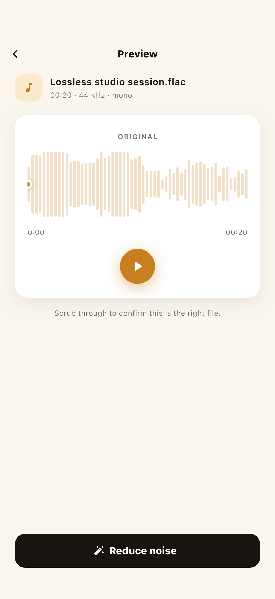

So entfernst du Rauschen aus einer Aufnahme in NoisyNo — 5 Schritte
NoisyNo funktioniert als einfacher Ablauf: Datei auswählen → vorhören → bereinigen → vergleichen → teilen. Wähle eine Sprachaufnahme oder eine Videodatei und verarbeite sie ohne Konto. Hier ist er, Schritt für Schritt.
Eine Aufnahme oder Videodatei auswählen
Die neuesten Dateien sind direkt da — kein Suchen in Ordnern. Suche im Dateien-Tab per Name oder wähle eine Sprachmemo, ein Interview, ein Meeting, eine Vorlesung oder ein Video; die App rührt nur die Datei an, die du auswählst. Gängige Formate funktionieren ohne Zutun (M4A, MP3, WAV, AAC, CAF sowie MP4/MOV-Video), es gibt also nichts vorher umzuwandeln.

Das Original vorhören
Scrubbe die Wellenform und spiele sie ab, um zu bestätigen, dass es der richtige Clip ist, und zu hören, welches Rauschen mit drin ist — ein gleichmäßiges Lüfterbrummen verhält sich anders als plötzlicher Straßenlärm. Es stellt auch die Erwartungen ein: einer tief unter Rauschen begrabenen Stimme wird geholfen, aber sie wird nicht gerettet, während das Abschaben von Rauschen von bereits klarer Sprache nah an eine Studioaufnahme kommt.

Die Bereinigung ausführen (100 % auf dem Gerät)
Tippe auf „Clean“, und das mitgelieferte Modell reduziert die Hintergrundgeräusche rund um die Stimme — keine Upload-Wartezeit, alles im Gerät, ohne Internet. Ein paar Minuten Audio sind meist in Sekunden bis zu einer Minute fertig; lass die App geöffnet, denn das Sperren des Bildschirms oder ein App-Wechsel kann die Verarbeitung pausieren.

Vergleiche das Original per A/B mit dem Ergebnis
Der Umschalter Original / Bereinigt wechselt sofort zwischen derselben Stelle, sodass du hören kannst, ob die Stimme noch lebendig klingt und das Rauschen natürlich gesunken ist. Das ist wichtig, weil aggressive Entfernung eine Stimme dünn oder wie unter Wasser klingen lassen kann — und verliert die bereinigte Version zu viel, ist das Original unangetastet, denn nichts hier überschreibt deine Quelldatei.

Sichern oder teilen
Tippe auf Teilen und sende das Ergebnis an die App, die du willst — Notizen, Nachrichten, ein Videoeditor, ein Podcast-Host, eine Transkriptions-App. Wohin es geht, ist ganz deine Entscheidung. Da es kein Konto gibt, musst du dich nirgendwo anders anmelden und es gibt keine Bibliothek auf dem Server von jemand anderem; die Datei liegt dort, wo du sie ablegst.

NoisyNo — Voice Noise Remover
Ein Offline-Voice-Noise-Remover, der Lüfterbrummen, Rauschen, Wind, Klimaanlagen und Raumklang aus Aufnahmen und Videoton reduziert. Er verarbeitet in deinem Handy, ohne Datei-Uploads.
Warum ein Ansatz ohne Upload wichtig ist
Die meisten Online-Noise-Remover laden deine Datei vor der Verarbeitung auf einen Server. Aber eine Aufnahme kann mehr enthalten, als du erwartest — Meeting-Inhalte, Kundennamen, ein unveröffentlichtes Interview — sodass selbst „entferne das Rauschen“ darauf hinausläuft, wo die Datei verarbeitet wird. Ein Ansatz ohne Upload ist zuerst eine Überlegung wert, wenn:
- Firmenmeetings, Kurse oder Interviews heikel zu teilen sind
- es ein unveröffentlichter Videoentwurf oder Podcast-Master ist
- das WLAN wackelig ist — ein Flugzeug, eine U-Bahn oder ein Ort vor Ort
- du es einfach schnell bereinigt haben willst, ohne Anmeldung oder Upload-Schritt
Hochladen, dann verarbeiten
Die Datei wird vor der Verarbeitung an eine Website oder einen Server gesendet. Große Dateien brauchen zum Hochladen Zeit, und du musst prüfen, wo und wie die Datei verarbeitet wird.
Im Handy verarbeitet
Die Verarbeitung läuft auf dem Gerät. Bei NoisyNo werden die gewählte Datei und die Ergebnisdatei nicht auf einen GrayForge-Server hochgeladen.
Welche Arten von Rauschen es reduzieren kann
Die Entrauschung auf dem Gerät ist am besten bei gleichmäßigen Hintergrundgeräuschen — den konstanten Klängen, die die ganze Zeit unter einer Stimme liegen. Häufige Beispiele, die man zu NoisyNo bringt:
- Lüfter- und Computerbrummen — Laptops, Tower, Projektoren
- Klimaanlagen- und Lüftungsdröhnen
- Rauschen und weißes Rauschen — billige Mikrofone, hohe Verstärkung
- Wind — Outdoor-Clips und Video an windigen Tagen
- Raumklang und Echo — hohle, kastige Räume
- Elektrisches Brummen und Summen — 50/60 Hz-Netz
- Straßen- und Menschenmengenlärm — Verkehr, Café-Gerede
- Tastatur- und Handhabungsgeräusche — Tippen, Antippen, Stöße
Plötzliche, scharfe Geräusche — ein Türknallen, ein Husten, eine Benachrichtigung — sind für jeden Remover schwerer, weil sie nicht konstant sind. NoisyNo konzentriert sich auf die gleichmäßige Schicht, die eine Stimme „geräuschvoll“ klingen lässt — und genau das brauchen die meisten Meeting-, Interview- und Vorlesungsaufnahmen tatsächlich.
Wissenswert: „kein Datei-Upload“ und „kein Netzwerk“ sind verschieden
Deine Aufnahme und die Ergebnisdatei werden nicht auf einen GrayForge-Server hochgeladen — laut der Datenschutzerklärung von NoisyNo werden Dateien auf dem Gerät verarbeitet. Das ist nicht dasselbe, als würde es nie das Netzwerk berühren: Für die App-Qualität können begrenzte Diagnosedaten (Firebase Crashlytics, Analytics, Remote Config) anfallen, und diese enthalten keine Dateinamen oder Audioinhalte.
NoisyNo lädt deine Aufnahme zur Verarbeitung nicht hoch, aber die Diagnosedaten für die Stabilität sind nicht buchstäblich null. Behandle Dateiverarbeitung und Diagnosedaten als zwei getrennte Bereiche.
Häufige Fragen
Kann ich Rauschen aus einer Aufnahme entfernen, ohne sie auf einen Server hochzuladen?
Ja. NoisyNo ist darauf ausgelegt, das Audio einer gewählten Sprach- oder Videodatei in deinem Handy zu verarbeiten. Die Datei wird nicht auf einen GrayForge-Server hochgeladen.
Funktioniert NoisyNo ohne Internet?
Nach der Installation läuft die zentrale Rauschentfernung offline. Die Installation der App, Updates, Store-Funktionen und einige Diagnosedaten können weiterhin von deinem Netzwerk abhängen.
Brauche ich ein Konto?
Nein. NoisyNo erfordert kein Konto und keine Anmeldung, um Rauschen aus einer Aufnahme zu entfernen.
Kann es auch den Ton in einer Videodatei bereinigen?
Bei unterstützten Videodateien kann es das Audio extrahieren, Rauschen entfernen und dich das resultierende Audio sichern oder teilen lassen.
Welche Audio- und Videoformate werden unterstützt?
Gängige Audioformate wie M4A, MP3, WAV, AAC und CAF funktionieren direkt, und NoisyNo kann das Audio aus MP4- und MOV-Video übernehmen. Du musst die Datei nicht vorher umwandeln.
Ist NoisyNo kostenlos?
NoisyNo ist kostenlos, ohne Konten, ohne Werbung und ohne Datei-Uploads, und die Rauschentfernung ist kostenlos nutzbar. Die Lautheitsnormalisierung ist eine Pro-Funktion, die per einmaligem In-App-Kauf freigeschaltet wird. Es gibt kein Abo.
Mach deine nächste Aufnahme leise.
Nach der Installation dauert das Bereinigen deiner ersten Datei etwa drei Minuten. Wenn etwas unklar ist, bekommst du Antworten direkt von der Person, die die App gebaut hat.
grayforge.dev@gmail.com